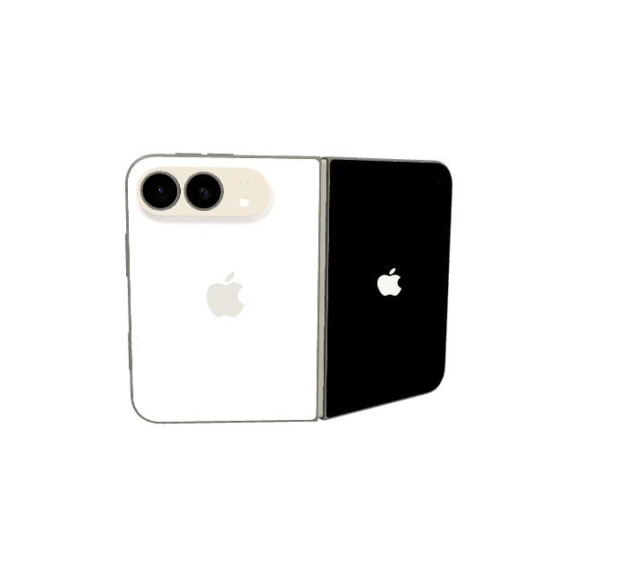
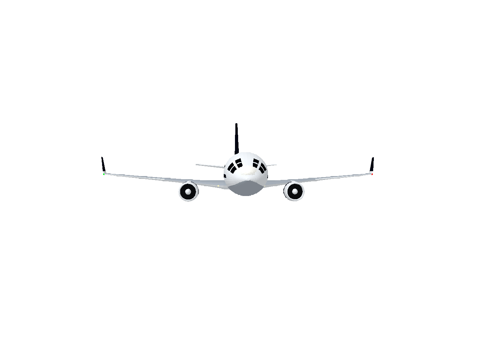
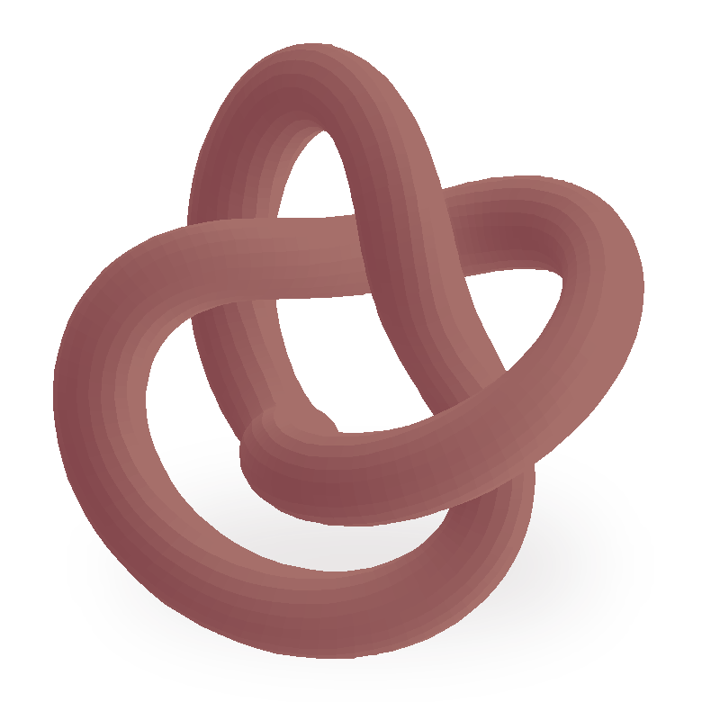

umo.Sites
Индивидуальная разработка сайтов
Дизайн и разработка
под задачи бизнеса.
Проектирую интерфейс, разрабатываю сайт и готовлю его к публикации.
Посмотреть работыИзбранные работы.
Дизайн и реализация.
Клиентские проекты и самостоятельные эксперименты с веб-дизайном.
3D и интерактив
Сайт может
быть объёмным.
Вращайте модель и исследуйте детали. Так я использую 3D в веб-интерфейсах.
Увидеть проект

От замысла
к запуску.
Обсуждаем задачу, согласуем дизайн и функционал. Я разрабатываю сайт, проверяю его и готовлю к запуску.
Как проходит работа
Обсудим ваш
будущий сайт.
Расскажите о проекте. Предложу подходящий формат, обсудим дизайн, функционал и стоимость.